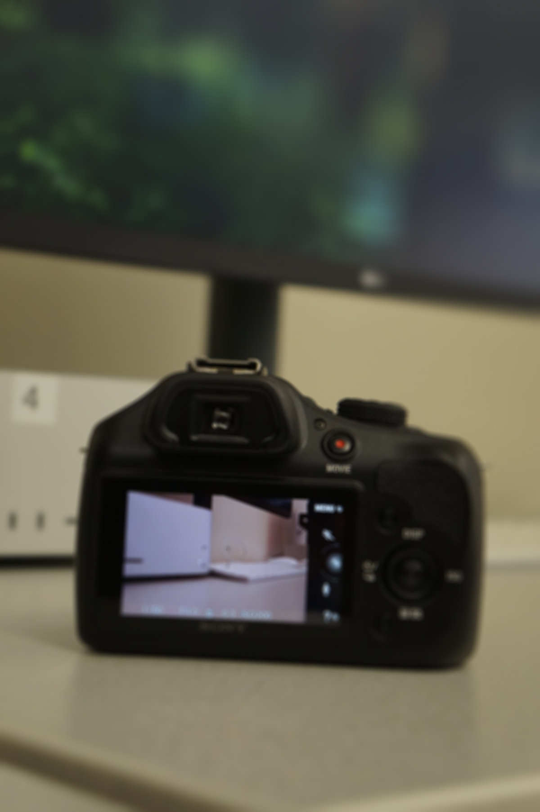

!DOCTYPE html>
<html lang="en">
<head>
    <meta charset="UTF-8">
    <title>Field Blur – Cheikh Fall</title>
    <link rel="stylesheet" href="style.css">
</head>
<body>

<header>
    <h1>Field Blur – Photoshop</h1>
    <nav>
        <a href="index.html">Home</a>
        <a href="depth.html">Depth of Field</a>
        <a href="cameraraw.html">Camera Raw</a>
    </nav>
</header>

<main>


    <h2> Applying Field Blur</h2>
    

    <p>
        In this example, I used Photoshop’s Field Blur tool to simulate a shallow
        depth-of-field effect. 
    </p>

</main>

<footer>
    MEDPL 150 — Spring 2026
</footer>

</body>
</html>
